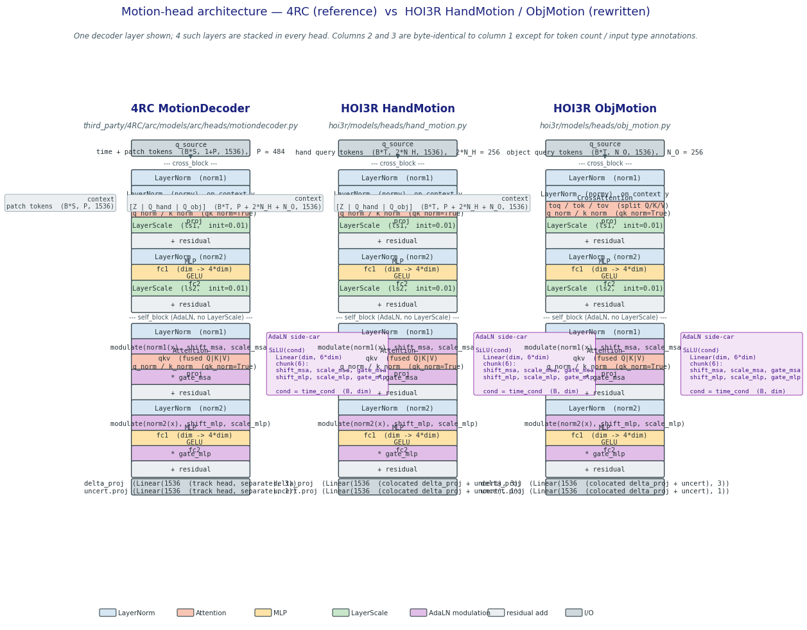

A prior audit (memory project_motion_init_mismatch.md, ckpt 8c72a09) found that
HandMotion / ObjMotion structurally diverged from 4RC's MotionDecoder:
x + attn(norm1(x)). HOI3R: q + self_attn(q, q, q).ls1.gamma / ls2.gamma for residual gating.normy(y) separately.
Consequence: only 56 of ~166 per-head params transferred through
load_4rc_motion_init_into, so --motion-init-from-4rc was
de facto a random init with some MLP/QKV seeding — not a real warm-start.
Each HOI3R motion-head layer is now a (cross_block, self_block) pair,
where both blocks are instantiated directly from the 4RC layer library
(third_party/4RC/arc/models/arc/layers/block.py):
cross_block → 4RC CrossBlock — norm1, normy,
CrossAttention (split toq/tok/tov, qk_norm = True),
ls1, norm2, Mlp, ls2
(LayerScale init = 0.01).self_block → 4RC AdaLNBlock — norm1, fused
qkv, qk_norm, proj,
norm2, Mlp, and the DiT-style 6·D
adaLN_modulation sidecar (SiLU → Linear(D, 6D),
zero-init). No LayerScale (AdaLNBlock deletes it).
Forward ordering within each layer follows 4RC
motiondecoder.py:146-177: cross then self.
Module path blocks.{i}.self_block.X matches the 4RC
checkpoint path motion_decoder.self_blocks.{i}.X after a
single prefix rewrite.
The only intentional differences from 4RC scene MotionDecoder:
delta_proj (Linear(1536, 3)) and
uncert.proj (Linear(1536, 1)) — 4RC factors these into a separate track head.Old _MotionBlock (pre-refactor) → new _MotionLayer (post-refactor):
The key-rewrite in load_4rc_motion_init.py collapsed from
~120 lines of shape-aware branching (fused-QKV assembly, name rename tables, LN
remapping) to a pair of regex substitutions:

MotionDecoder (reference) · column 2 = HOI3R
HandMotion · column 3 = HOI3R ObjMotion. Columns 2
and 3 are byte-identical to column 1; only the input q_source annotation
(hand vs object token count) and context annotation differ. Every module
box — LayerNorm, Attention/CrossAttention,
LayerScale, MLP, AdaLN sidecar — uses
the same 4RC name and ordering.
Run against the real Luo-Yihang/4RC checkpoint at
/mnt/afs/haonan/hoi3r/checkpoints/4RC/hub/models--Luo-Yihang--4RC/
snapshots/3634b324abb16634a527987c8efa212e392a1449/model.safetensors:
| Head | total dst keys | transferred | shape mismatches | skipped_not_in_source |
|---|---|---|---|---|
Before refactor (HandMotion @ b18a2d8) |
~170 | 56 of ~166 (34%) | many (AdaLN 2·D vs 6·D, missing pre-norms) | pre-norms, LayerScale, AdaLN, qk_norm… |
| After refactor (HandMotion) | 172 | 168 of 168 motion_decoder keys (100%) | 0 | 4 — only delta_proj.{w,b} + uncert.proj.{w,b} (no 4RC counterpart by design) |
| After refactor (ObjMotion) | 172 | 168 of 168 (100%) | 0 | 4 — same four output-projection params |
motion_decoder.{self,cross}_blocks.* now has a byte-compatible
home in the HOI3R head. --motion-init-from-4rc is now a true
warm-start: norm params, LayerScale gammas, split-QKV projections, qk_norm,
and the 6·D AdaLN modulation all load from 4RC.
| Test | What it checks | Result |
|---|---|---|
tests/hoi3r/test_hand_motion.py |
Output shape: (B, N, 3) + (B, N) |
PASS |
tests/hoi3r/test_obj_motion.py |
Output shape; ObjMotion is a subclass — shares structure | PASS |
tests/hoi3r/test_adaln.py |
common.AdaLNBlock still works (unchanged; used elsewhere) |
PASS |
tests/hoi3r/test_hoi3r_model_batched.py |
Batched (B·T) motion-head forward ≡ serial for b,τ loop |
PASS |
tests/hoi3r/test_load_4rc_motion_init.py (9 cases) |
Key rewrite, shape-check, idempotence, strict-mode error, extra-keys skip | 9/9 PASS |
Real-ckpt transfer (Luo-Yihang/4RC) |
168/168 motion_decoder tensors, 0 shape mismatches, 4 output-head keys unchanged | PASS |
q_source, context,
time_cond → delta, sigma) is preserved
exactly; HOI3RModel.forward and the overfit script call-sites do not change.
The two running overfit ablations at 5cc5faf (pre-refactor) were:
pt-vchlwhid — arm-A random init — state: SUCCEEDED (created 2026-04-23T02:33:06Z).pt-bbq2n8ni — arm-B 4RC init — state: SUCCEEDED (created 2026-04-23T02:33:16Z).Both finished before this commit landed. This refactor makes their result a "previous-architecture" baseline, as planned. No log directories were touched.
--motion-init-from-4rc
now that the flag is a real warm-start. Pre-refactor it only seeded ~34 %
of params so the flag was mostly decorative; post-refactor it seeds every
norm / LayerScale / QKV / AdaLN tensor, which should shorten the
cold-start plateau in the motion heads. Worth a smoke A/B on the same
subject-01 clip (arm-A random, arm-B 4RC-init) with the new architecture
to confirm the warm-start signal is real before committing it to the
default recipe.
MotionDecoder was trained on generic scene-point tracking;
HOI3R adapts the same modules to hand-joint and object-surface motion.
Warm-starting only the norm/attn projections (not the delta/sigma output
heads) is intentional — the last linear layer must reset for the new
geometry. Expect early-training convergence to look similar in the first
~100 steps regardless of init, then diverge.
5cc5faf measured init-impact on the
old architecture where only 34 % of params could transfer. A
clean re-run on the new architecture will give the first real
"4RC-init vs random-init on structurally matched heads" comparison.
init_values as a config knob.
Currently hard-coded at 0.01 (matching 4RC). If arm-A (random init, new
arch) diverges, worth sweeping init_values ∈ {1e-5, 1e-4, 1e-2}.
Full architectural inventory: docs/notes/motion_decoder_spec.md
(committed in this change). Lists every per-block tensor with shape and
provenance, used as ground truth by tests/hoi3r/test_load_4rc_motion_init.py
to enumerate expected transfer counts.